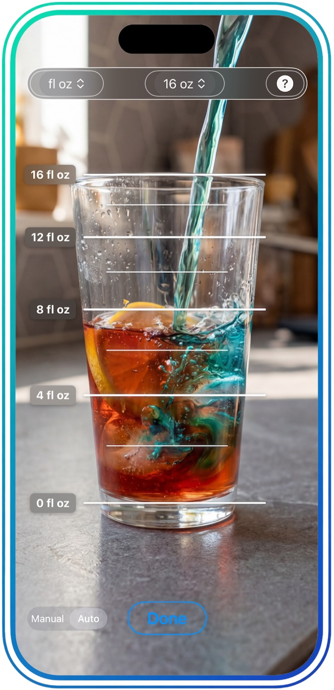
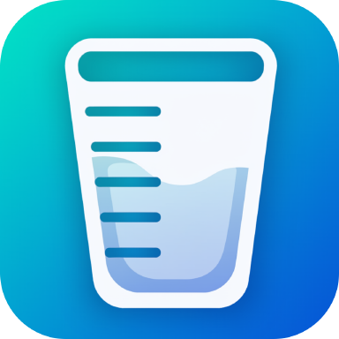
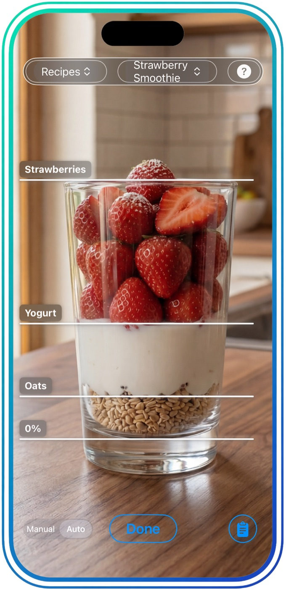
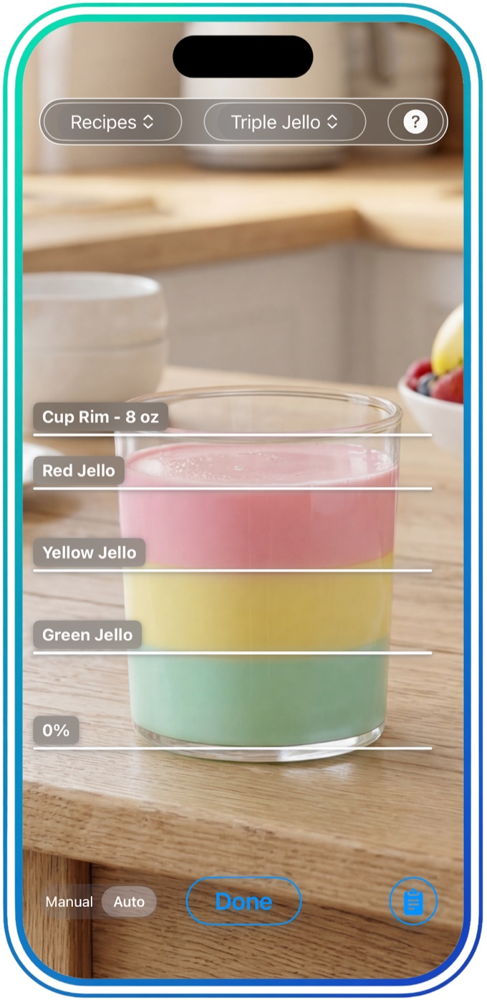
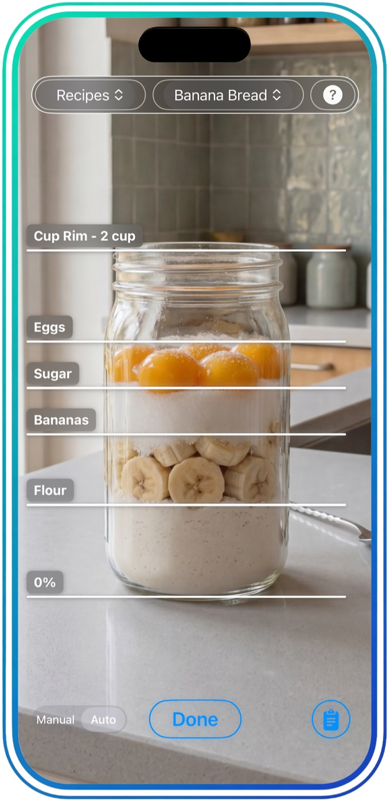
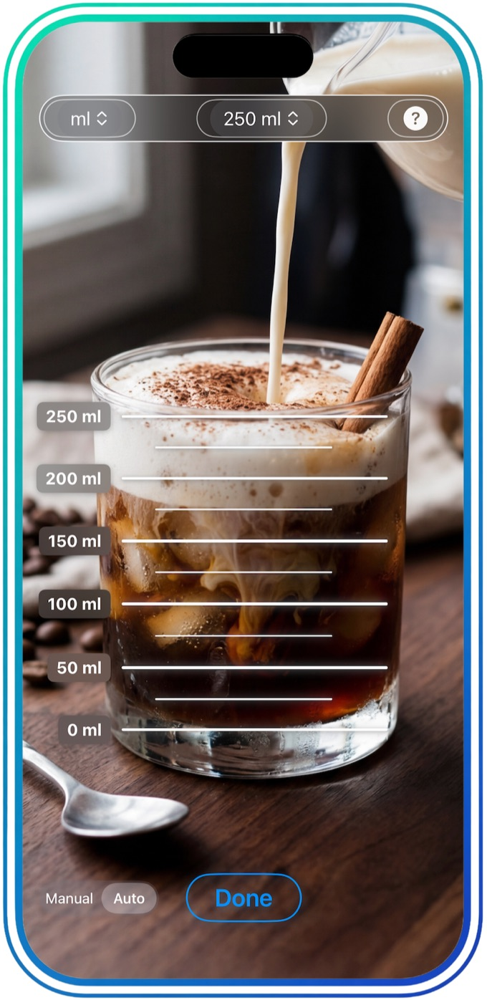
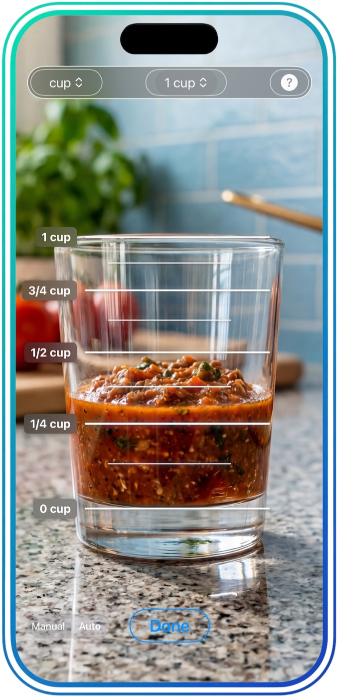

Any glass, instantly calibrated
Point your camera at whatever is already on the counter — tall, short, wide, narrow. MeasuringLens analyzes the shape and lays accurate measurement lines over the live camera feed.

Your glass is your measuring cup.
Snap a photo of any glass and MeasuringLens analyzes its dimensions in seconds — then overlays real measurement lines right on your camera feed. Line up the markings, pour with confidence, and you're done.
Download on the App Store
Point your camera at whatever is already on the counter — tall, short, wide, narrow. MeasuringLens analyzes the shape and lays accurate measurement lines over the live camera feed.

Build a recipe once — each ingredient and how many parts it takes. Open it again and every ingredient gets its own line on whatever glass you're holding. No pulling out your phone to reread the recipe.

No measuring one thing, washing up, then starting again with the next. Every line appears together, so you can pour straight through a layered recipe from the bottom up.

Flour, bananas, sugar, eggs — layered in one jar, each with its own fill line. That's four measuring cups that never leave the drawer, and four fewer things to wash.

Fluid ounces, cups, milliliters, or proportional parts. Match whichever format the recipe is written in — cookbook, blog, or your own notes — without doing the conversion yourself.

Fractional cup lines make quick work of dressings, sauces and anything else that needs precision in a small pour.
Tall, short, wide or narrow — measured in fl oz, cups, ml or parts.
Measure everything in the glass you already have out, then straight to the dishwasher.
Home, the office or on vacation. A glass and your phone is the whole kit.